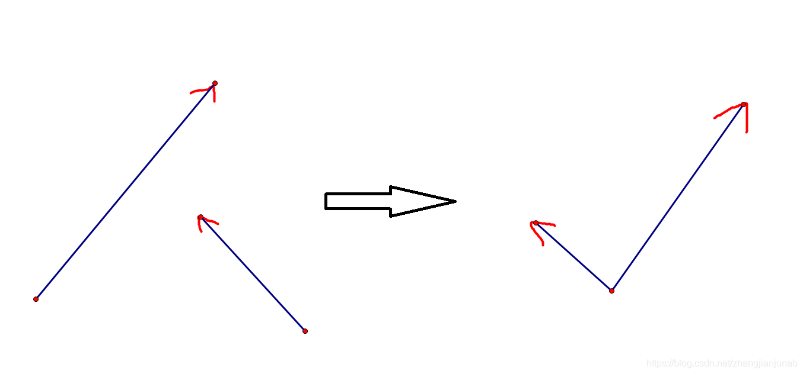

计算几何简单入门学习笔记
参照文献
你谷日报真好用：https://www.luogu.com.cn/blog/wjyyy/geometry1
B站UP主：https://space.bilibili.com/88461692?spm_id_from=333.788.b_765f7570696e666f.1
https://www.cnblogs.com/xiexinxinlove/p/3708147.html
点、向量
书写约定
上了初中就应该学过直角坐标系了，这里不多阐述，本文 $(x,y)$ 表示点的坐标，$A(x,y)$ 中的 $A$ 表示点的编号，特殊的，$O$ 点是坐标系的圆点。
向量呢，是一个有向线段，通常表示为：$\vec{AB}$ 就表示由$A$到$B$的有向线段。
但是呢，许多情况，向量默认起点是在坐标系的原点：$O$，因此向量经常看到的形式都是：$\vec{OA}$，且由于起点固定，所以向量还有种表示方法，就是直接用终点$A$来表示向量，$\begin{bmatrix}x_A\\y_A\end{bmatrix}$ 也是一种表示方法。
下文中一般情况下默认起点不一定在 $O$ 点（很大多数情况都是），但是当看到用终点表示向量时，默认起点是 $O$ 或者是前文规定的某个基准点（表示以这个点建立坐标系），如果一般是 $\vec{AB}$ 这样两个端点给出的向量乘积，那么就以两个向量的共同端点为基准点建立坐标系。（当然还是有特例，一般会有特殊说明可能会忘记写）
向量的模呢，其实就是其的长度，比如向量 $\vec{A}$ 的模写作：$|\vec{A}|$。
向量的幅角呢，其实就是其和 $x$ 正半轴形成的夹角。
一般可以用 $atan2$ 函数进行计算，但是需要注意 $C++$ 用的是弧度制。（其实没啥区别，正负性没有变，值域变了而已。）
向量运算
实际上，这些运算实际指的是起点在$O$点的运算。
普通运算
加法运算：$\begin{bmatrix}x_A\\y_A\end{bmatrix}+\begin{bmatrix}x_B\\y_B\end{bmatrix}=\begin{bmatrix}x_A+x_B\\y_A+y_B\end{bmatrix}$
减法运算：$\begin{bmatrix}x_A\\y_A\end{bmatrix}-\begin{bmatrix}x_B\\y_B\end{bmatrix}=\begin{bmatrix}x_A-x_B\\y_A-y_B\end{bmatrix}$
乘常数运算：
其余的运算对于信息学计算几何用处不大，因此不再赘述。
你放屁，叉积不重要吗。
我也知道叉积重要
所以下面开始讲叉积
叉积
叉积的运算法则：
（考虑到图片标识问题，所以 $AB$ 换个位置。）
你没有看错，就是这么个东西，返回值竟然还是实数，甚至还没有交换律（因此叉积一定要注意前后顺序）。
那么其有什么实际作用呢？
对于向量 $\vec{OB}$ 和 $\vec{OA}$ ，如果 $\vec{OB}$ 绕 $O$ 点逆时针旋转 $0°\sim 180°$ 能够与 $\vec{OA}$ 共线，那么 $\vec{OB}\times \vec{OA}>0$，但是如果不能，代表 $\vec{OA}$ 逆时针旋转 $0°\sim 180°$ 能够与 $B$ 重合，那么 $\vec{OB}\times \vec{OA}<0,\vec{OB}\times \vec{OA}>0$ ，当然，如果一开始就共线，那么为 $0$ 。
至于叉积还有什么作用，也就是求 $▲OAB$ 的面积了。
实际上，这其实是叉积在线性代数中的意义，叉积求的是 $\vec{OB}$ 和 $\vec{OA}$ 为边的平行四边形的面积（除 $2$ 即可），但是为什么会有正负之分呢？额，这个跟线性变换有关，不再赘述，反正意义差不多就这两个。
额，至于证明吗，其实用几何就能证明了，至于线性代数的证明呢？我也不知道。可能根本就没有吧。
同机房的CLB奆佬用割补法给出了证明，但是实际上和上面的本质是差不多的，在此不再赘述。
当然，叉积的记忆也很简单。
交叉相乘再相减。
1 | inline double mu(dian x,dian y,dian z)//以点z为圆点的叉积 |
当然，叉积有一个性质大家应该也看出来了：$\vec{A}\times \vec{B}=-\vec{B}\times \vec{A}$
多边形的面积
1 | 【题意】 |
1 | 【输入格式】 |
先考虑凸多边形：
只要这样子分就行了
可以看出只要选一个点然后以这个点分割成一堆三角形就行了，而且用叉积都是一个方向。
公式的话，设点的序列是从某个顶点开始，逆时针给出，为$a_1,a_2,a_3,…,a_k$，那么就为$(\vec{a_1a_2}\times \vec{a_1a_3}+\vec{a_1a_3}\times \vec{a_1a_4}+…+\vec{a_1a_{k-1}}\times \vec{a_1a_k})/2$ 。
需要注意的是，由于是逆时针给出，且是正数，所以其中的每一个叉积都是正数，不需要加绝对值，但是如果在不知道是逆时针还是顺时针给出的情况下，最好还是加上绝对值。
那么我们再考虑非凸多边形面积的情况：
如果采用上述的方法：$(\vec{a_1a_2}\times \vec{a_1a_3}+\vec{a_1a_3}\times \vec{a_1a_4}+…+\vec{a_1a_{k-1}}\times \vec{a_1a_k})/2$，我们发现刚好搞好就是多边形的面积，而有些叉积虽然算到多边形外面，后来又消掉。
因此你会发现，如果每次叉积都取绝对值反而会错，因此叉积的正负性真的是一个非常美妙的东西啊。
证明完全不会。
而在网上寻找证明的时候，我看到一个有意思的东西。还是没找到证明
就是说我们上文是默认 $a_1$ 为三角形的公用顶点的，但是如果我们在坐标系中随便选一个点$x$，然后值为：$(\vec{xa_1}\times \vec{xa_2}+…+\vec{xa_k}\times \vec{xa_1})/2$，这样竟然也不会错，用一张别的大佬的博客的图来帮助理解。
1 |
|
线段的相交与直线的交点
线段的相交判定
1 | 【题意】 |
线段相交裸题。
线段相交不直接列方程打几十行代码暴力判断吗
首先看下面这张图：
把向量$AB$化成直线，然后判断另外一个向量是否是$\vec{C’’D’’}$的形式，其余的两种形式肯定都不可能相交。
敏锐的人发现了端点一个在左边，一个在右边（当然，其中一个端点在直线上也可以，两个端点等会讲），更加敏锐的人发现，直线不就是$180°$吗？特别敏锐的人发现，只要两条向量互相都满足这个要求，则一定相交，在不共线的情况下相交，则两条向量互相都满足这个要求。
至于怎么判断是不是长这个样子，即$(\vec{AB}\times \vec{AC’’})*(\vec{AB}\times \vec{AD’’})<0$，然后两个一起判断即可。
代码片段：
1 | if(mu(y.x,x.x,x.y)*mu(y.y,x.x,x.y)<=0 && mu(x.x,y.x,y.y)*mu(x.y,y.x,y.y)<=0)return true; |
注：此代码在后面会稍有魔改，本质是利用叉积：$\vec{A}\times \vec{B}=-\vec{B}\times \vec{A}$的性质，而且$<=0$后面要把等号去掉$0$，因为端点在直线上和共线都是$0$，不能区分。
但是呢，还有一种特别特别恶心的情况，共线。
共线的时候，两个既有可能相交，又有可能不相交，但是由于已经共线，所以我们不妨直接暴力判断即可。
代码：
1 |
|
直线交点
注：本文不考虑共线
一个平面的直线除了平行一定有交点。
平行的情况这里不讲（实际上用截距法算一下斜率判断一下即可），但是这里要将如何在知道两条直线上的各两个点（一条直线上给出的两个点不会相同）的情况下（为什么不能知道斜率啊(#`O′)），判断其交点。
都知道两点确定一条直线，于是可以直接求斜率列方程求交点，但是呢，这样是不是过于麻烦了呢？
于是我们考虑用叉积来求。其实就是想装逼
现在，我们不管两个点形成的直线，而是考虑其形成的线段。
先考虑给出的线段$AB$在直线$CD$的两侧（$C,D$点都为直线上任意一点）：
注：如果你把给出的线段当成向量，那么$A,D$为起点。
这里先默认$A$在$B$左边，$C$在$D$上面，保证叉积是正的。
此时$AB=AP+BP$。
如果我们能求出$\frac{|AP|}{|BP|}$，那么就可以用下面这条公式算出$P$的坐标：
$\vec{OA}+\frac{|AP|}{|AB|}*\vec{AB}=\vec{OP}$，当然，这不就是$P$的坐标吗？
但是关键是怎么求$\frac{|AP|}{|AB|}$呢？
考虑转换成面积，$A、B$向$CD$做一条垂线。
不难看出：$▲AEP∽▲BFP$
所以$\frac{AP}{BP}=\frac{AE}{BF}=\frac{S▲ABD}{S▲BCD}$
完美的转换成两个三角形的比值。
因此考虑叉积，以$D$为基准点：
$\frac{AP}{AB}=\frac{\vec{DC}\times \vec{DA}}{\vec{DB}\times \vec{DC}+\vec{DC}\times \vec{DA}}$
当然，上文中$D$在$C$下面，且$A$在$B$左边，所以叉积一直都是正的，当然，如果$C$在$D$的下面，则所有叉积取负，反正求的是比例，也没什么事，如果$A$在$B$的右边，也是如此，只是正负性的变化，但是因为同时变化，所以没有关系。
而且我们发现因为叉积是求逆时针的，所以旋转并不会改变正负性，只有左右翻折会（且是所有叉积的正负性都会改变，因此左右翻折不会改变叉积之间比例），而上文中，$A$与$B$互换位置其实就是翻折，$C$在$D$下面确不是完全的翻折，但是$C$在$D$下面也会导致所求的叉积全部取负，所以也不会改变比例。
当然，这个做法分母不够优秀，因此我们来证明一个定理。
定理1
$\vec{AB}\times \vec{AC}+\vec{AC}\times \vec{AD}=\vec{AC}\times \vec{BD}$
为什么这两个向量公共端点没有也能乘。
这就是前面叉积讲解中忽略的第三种情况。
对于$\vec{AC}$，我们用$C$的坐标减去$A$的坐标，相当于把$\vec{AC}$移到$\vec{O?}$的位置，把起点设为$O$，然后两个向量都如此操作后得到的叉积值。
或者你也可以理解为通过同样的方式把一个向量的起点移到另外一个向量的起点，以此统一起点。

而在这个直线交点的证明的后半部分，基本都是用这种方式，于是又多了一个性质：
$\vec{AB}\times \vec{CD}=-\vec{BA}\times \vec{CD}$
证明的话，同底等高的三角形面积相同，且由于方向问题，取个符号。
于是不管是叉积的顺序还是向量内部的顺序，都显得十分重要。
回归正题。
证明：
$(x_{B}-x_{A})(y_{C}-y_{A})-(y_{B}-y_{A})(x_{C}-x_{A})+(x_{C}-x_{A})(y_{D}-y_{A})-(y_{C}-y_{A})(x_{D}-x_{A})$
$=(x_{B}-x_{A})(y_{C}-y_{A})-(y_{C}-y_{A})(x_{D}-x_{A})-(y_{B}-y_{A})(x_{C}-x_{A})+(x_{C}-x_{A})(y_{D}-y_{A})$
$=(x_{B}-x_{D})(y_{C}-y_{A})-(y_{B}-y_{D})(x_{C}-x_{A})$
$=(y_{D}-y_{B})(x_{C}-x_{A})-(x_{D}-x_{B})(y_{C}-y_{A})$
$=\vec{AC}\times \vec{BD}$
可视化理解：
运用定理1优化
$\frac{|AP|}{|AB|}=\frac{\vec{DC}\times \vec{DA}}{\vec{DB}\times \vec{DC}+\vec{DC}\times \vec{DA}}=\frac{\vec{DC}\times \vec{DA}}{\vec{DC}\times \vec{BA}}=\frac{\vec{DC}\times \vec{DA}}{\vec{AB}\times \vec{DC}}$
更加广泛的情况
当然，还有$A,B$在直线同侧的情况，
同样，先保证 $\vec{DC}\times \vec{DA}$ 是正的，且 $B$ 在 $A$ 右边，$C$ 在 $D$ 上面。
此时 $AB=AP-BP$，一样可以 $\frac{AP}{BP}=\frac{AE}{BF}=\frac{S▲ABD}{S▲BCD}$
但是我们发现 $-BP$ 难搞啊，但是 $\vec{DB}\times \vec{DC}$ 就是负的，完美，这种情况证毕。
于是考虑翻折和旋转，我们只要证明了 $A,B$ 在直线 $C,D$ 的左边的情况是成立的，旋转便可以得到所有的情况。
很明显，$C,D$ 的上下关系改变所有的叉积正负性，比例不变，但是$B$在$A$左边时，我们发现，正负性都没有改变，应该没有影响吧，但是算出来的 $\frac{AP}{AB}$ 变成了负数（但比例绝对值对的）？但是发现 $\vec{AB}$ 与 $\vec{AP}$ 方向反了，负数刚好调过来，完美，因此得证。
考场直接记住结论他不香吗。
实际上，你从假设给出的两条线段有交点的方向推出的公式，基本上是可以推广到所有情况的，在考场上忘了直接这样推就行了（记住推的思路是最好的），当然不排除推广不了的情况。
1 | inline double muu(dian x1,dian x2){return x1.x*x2.y-x2.x*x1.y;}//叉积 |
凸包
题目
1 | 【题意】 |
思路
凸包初步概念
即找到最小的凸多边形包括我们给出点集 $V$ 。
转换思路
不难发现凸包就是最小周长：
非凸多边形很明显可以用三角形两边之和小于第三边来证明。
其余的凸多边形，一定比凸包周长要大，感性的理解就是拿个橡皮筋，在一个图上放手，会发现其就是凸包，且是最小周长，但是理性证明，不会。
凸包求法
Orz wjyyy奆佬手推凸包。
但是这里不讲上下凸包合并。
讲一个算法：graham扫描法。
凸包的性质
介绍这种算法不妨从凸包的性质讲起。
- 点集的最下角（即 $y$ 最小，$y$ 相同 $x$ 最小）的点一定是凸包的顶点，设这个点为 $x$ ，不难发现对于点集中任意一点$y(y≠x)$，$\vec{xy}$ 的幅角都非负。
- 从 $x$ 逆时针遍历凸包的顶点，得到$a$顶点序列（ $k$ 个点），其中 $a_1=x,a_{i}=a_{(i-1)\%k+1}$，$\vec{xa_2},\vec{xa_3},…,\vec{xa_k}$ 的幅角严格递增，且都非负。
- 顶点序列中对于 $(1≤i≤k)$，$∠a_{i}a_{i+1}a_{i+2}<180°$，$\vec{a_{i}a_{i+1}}\times \vec{a_{i}a_{i+2}}>0$（注意这条，如果对于一个多边形满足这条公式，其是凸多边形
应该，至少凸包就是用这个判断的。）。
不要问我证明，我也不会证明，再问就是显然
凸包的求法
根据第一条性质，找到一个点，并且把其放到第一个点，在把剩余的点，按照其和第一个点形成的向量的幅角排序（幅角相同，长度小的优先）。
这样排序有个什么好处呢？这样保证了排序中最后那个点一定在凸包中。
用栈维护目前凸包的点序列，设现在栈中有 $top$ 个点，现在新加入$x$点，如果$top=1$，无条件假如，如果不是，$\vec{a_{top-1}a_{top}}\times \vec{a_{top-1}x}>0$ ，加入，否则 $a_{top}$ 在凸包的边上或者内部，弹出，然后不断判断，知道$x$可以加入为止。
代码
时间复杂度：$O(nlogn)$。
几年前的代码好难看啊。
1 |
|
课内可能会用到的数学知识福利
点到直线的距离
这里放上一个大佬的另类证法,很强！
膜拜大佬。
如何将直线移动1个单位的距离？
这里指的是垂直距离，那么就不是+1-1的事情了，这里用两点式来进行证明其中的一种情况（其他情况也可以证）
现在有一条直线：$ax+by=0(a<0,b>0)$
$AC⊥A$ 所在的直线
$AC=1$，设 $C$ 点的 $x$ 坐标为 $k$ ，那么我们可以求出 $AC$ 的两点时 $bx-ay=0$ ，那么进而求出 $AD=-\frac{bx}{a}$ ，勾股得出 $AC=\frac{x\sqrt{a^{2}+b^{2}}}{-a}=1$ ，那么 $x=\frac{-a\sqrt{a^{2}+b^{2}}}{a^{2}+b^{2}}$，那么 $C(\frac{-a\sqrt{a^{2}+b^{2}}}{a^{2}+b^{2}},\frac{-b\sqrt{a^{2}+b^{2}}}{a^{2}+b^{2}})$ ，然后我们通过将 $x,y$ 带入 $ax+by+?$ 求出 $?$ 是 $\sqrt{a^{2}+b^{2}}$ ，那么我们就知道移动 $1$ 就是加减 $\sqrt{a^{2}+b^{2}}$ 。
两直线交点看不懂版
现在我是看不懂我以前写什么了。而且这个证法好像还不严谨
但是本着保留思想的心态，我把其保留了下来，可以不看，完全没有看的必要。毕竟我自己写的东西自己也没看看懂
难道我们求两线交点就只能列一个二元一次方程？
不，我们可以用叉积！！！
看如下图：
如何求 $\frac{AP}{CP}$？
我们做一条垂线：
我们 $\frac{AE}{BF}=\frac{S▲ABD}{S▲CBD}$，$∠APE=∠CPF，∠AEP=∠CFP$，所以$▲AEP∽▲CFP$，所以 $\frac{AP}{CP}=\frac{AE}{CF}=\frac{S▲ABD}{S▲CBD}$
而这个面积是可以用叉积来求的。
我们设 $t1,t2$ 分别为以 $C$ 为基准点旋到 $A,B$ 的叉积。
两种情况：
1
此处 $t1<0,t2>0$
$P$ 点坐标？
列波式子（求 $x$ 坐标，$y$ 坐标一样，在这里推导过程省略原因，多用相似三角形）：
当然，死记硬背也没问题：$122112$。
2
那么这个的长这样：
在此$t1<0,t2<0$
等会，这个很眼熟！！！
跟上面一样，所以用这个就行了。
1 | inline dian jd(line x,line y)//怎么可能用inline |
小结
这还仅仅是入门啊QAQ。